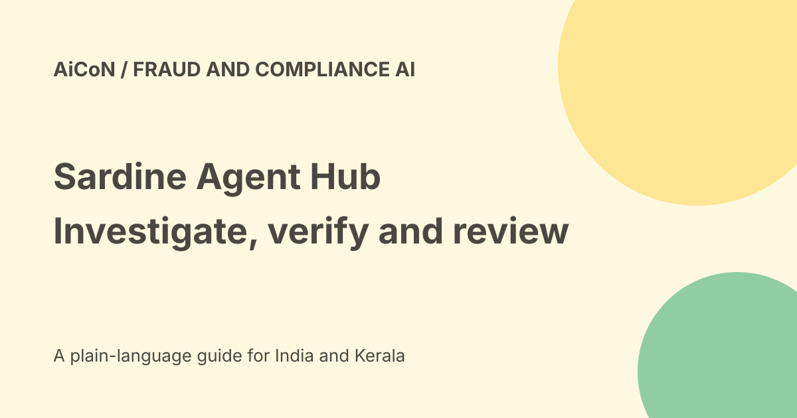

Sardine Agent Hub: fraud investigations and human review
Sardine describes Agent Hub as one operating surface for its fraud and compliance agents. Its September product page says core agents are live, with regional capabilities still expanding. It supports investigation work, but does not make a suspicious match proof of wrongdoing or remove the need for accountable review.

What the shared context changes
An analyst may already be looking at a customer, transaction, session or alert. Sardine says the agent can use that context rather than asking for it to be pasted into a new conversation.
That can reduce repeated work. It does not prove the context is current, complete or the correct record. Confirm the actual person, business and transaction before making a decision.
The seven named agents
- Rule Assistant drafts fraud-detection rules from a description.
- Data Analyst investigates and validates results using SardineQL.
- Doc KYC reviews identity documents, including name variations and OCR fallback.
- OSINT Search researches public information about people and companies.
- Graph Analyst maps relationships across connected signals.
- Business Due Diligence handles business verification and owner research.
- Compliance Screening reviews sanctions, politically exposed person and adverse-media matches.
A shared device, similar name or public allegation needs interpretation. A model's output is not by itself a verified identity or legal finding.
Ways to run the work
The page describes interactive chat, attaching an agent to an alert queue and scheduling recurring reviews. It also describes evaluations for a new or updated agent.
Automatic investigation of an alert is distinct from automatically freezing an account, rejecting a customer or sending a regulatory report. Confirm the action boundary for your workflow.
Agent Hub versus Sardine Flow
Hub is the surface for using and managing agents. Sardine Flow is described separately as an orchestration layer combining agents, rules, APIs, data and human review in multi-step workflows.
The Hub page lists external API and agent-to-agent invocation, custom agents and broader tools or data connections as future expansion. Do not promise every roadmap feature as current tenant access.
Evaluation needs representative cases
A test should include genuine matches, similar names, transliteration, missing documents and benign shared infrastructure. A rule that catches one fraud pattern can wrongly flag ordinary customers.
Measure false positives and false negatives, review source evidence and inspect how missing data is handled. Keep a way to challenge and correct a result.
A controlled team pilot
- Confirm current regional agent availability.
- Choose an approved, narrow investigation task.
- Use masked cases with known review outcomes.
- Define what data the agent may access.
- Compare outputs with original evidence.
- Test ambiguous identities and incomplete records.
- Keep final decisions with authorised reviewers.
- Inspect logs and escalation paths.
- Evaluate updates before enabling them broadly.
No account was connected, identity document uploaded or fraud rule activated for this guide.
Vendor results are not universal accuracy
Sardine reports access for more than four hundred fifty customers and a bank deployment where agent decisions matched sampled human reviews 99.9 percent of the time.
Those are company-reported figures. Agreement with a sample of human decisions is not a guarantee of perfect sanctions detection, zero bias or the same result in a new environment. Sample design and reviewer quality matter.
Regional and India boundaries
The product page says availability differs with regional infrastructure and models. It names Canadian and FIS environments among the expansions.
No specific India tenant, data-residency promise, local regulatory approval or Malayalam document performance was established. Confirm the actual environment and supported features with the provider.
Cost and free verdict
No final public tariff, consumer free plan or INR quote was established for Agent Hub in the checked pages. Account access, modules, integration and support may need separate terms.
A free-to-read product announcement is not a licence to process private cases. No demo or commercial request was submitted here.
Privacy and fair treatment
Fraud and compliance data can include identity documents, payment records and adverse allegations. Restrict access and preserve source attribution.
Public information can be wrong or refer to another person. Give reviewers the evidence, uncertainty and applicable correction process rather than only a risk label.
What changed since the original post?
We separate Hub from Flow, retain regional rollout and roadmap boundaries, and label reported deployment agreement as a vendor sample rather than a universal accuracy promise.
Frequently asked questions
Does a match prove fraud?
No. Verify identity and evidence.
Is every region identical?
Sardine says capabilities can differ.
Was a live case processed?
No.
Sources: Official Agent Hub launch and FAQ · Official Flow explanation. Checked 7 October 2026.